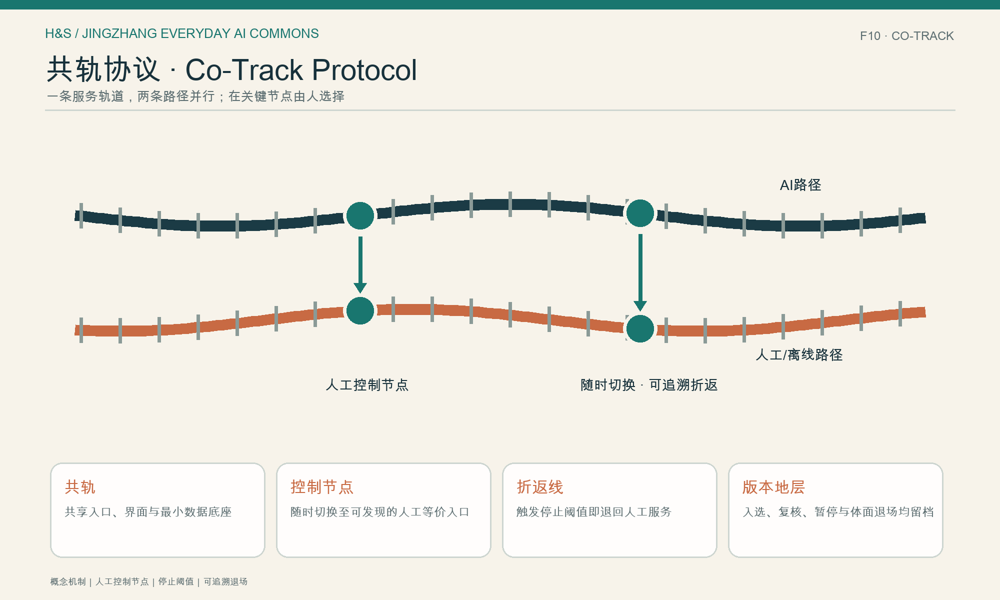
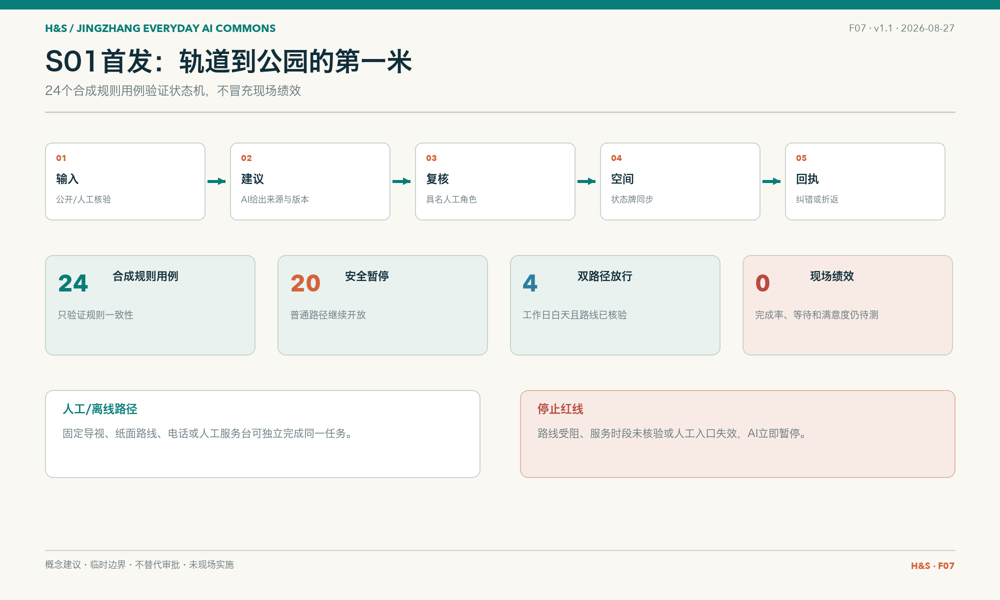
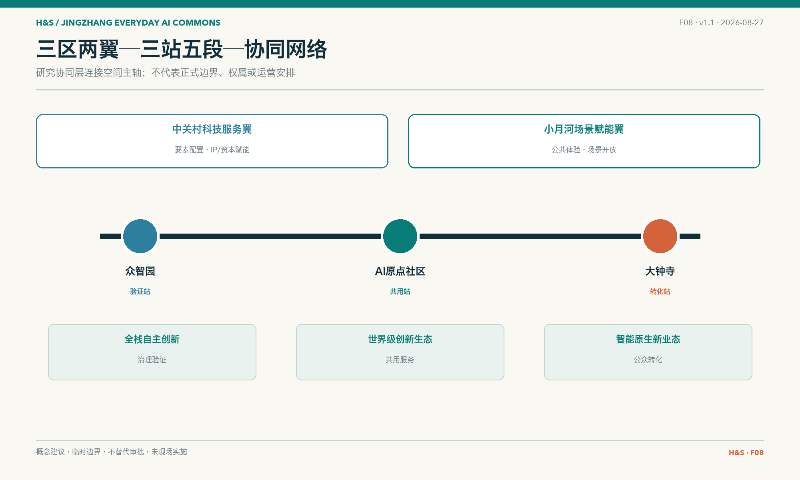
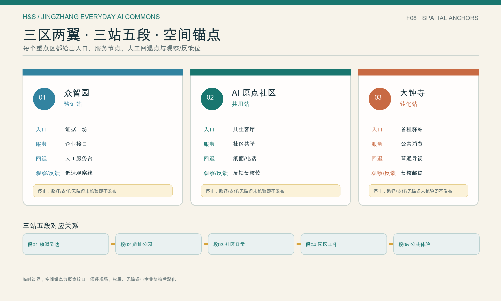
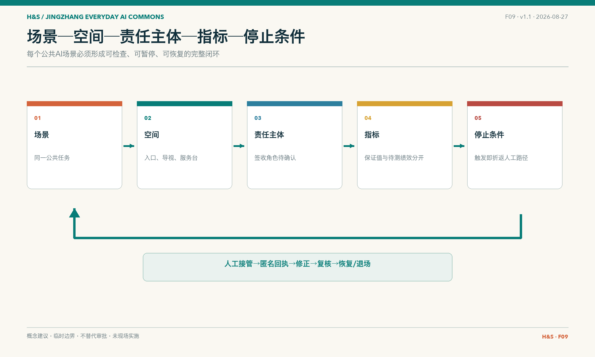
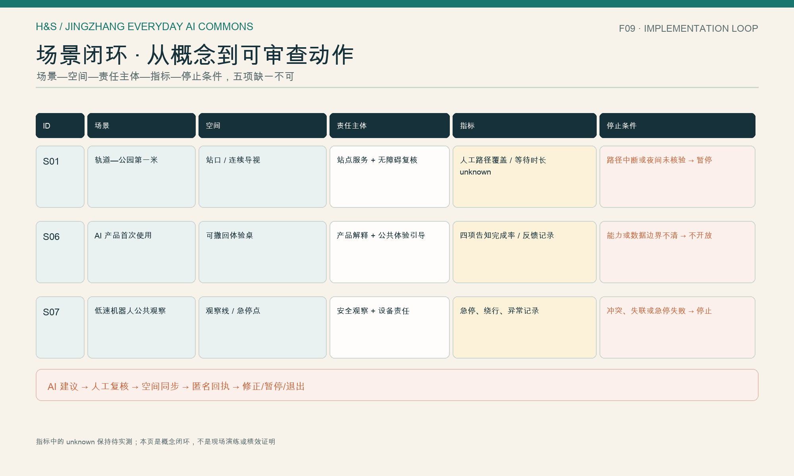

两条路径，共享底座
青绿色控制节点由人选择，触发阈值即暂停并回到普通服务。
JINGZHANG EVERYDAY AI COMMONS
用三站五段把 AI 创新带变成普通人可理解、可选择、可回退、可复核的日常公共路径。
共轨协议：一条轨道，两条路都走得通。

青绿色控制节点由人选择，触发阈值即暂停并回到普通服务。
三站五段、KEY/ST/SEG 编号与 S01/S06/S07 逐项对应。
临时边界、服务时段、责任角色和绩效型指标保持 provisional/unknown。
现场签收入口和回退点后，才冻结阈值并决定是否进入低风险试点。
AI 与人工路径共享入口、界面、反馈和最小数据底座。
入口明示人工等价路径，可随时切换，不强制注册。
路径受阻、人工入口失效或风险超界时，AI 暂停并恢复普通服务。
每次复核、暂停、接管和退出都留下来源与版本。
| 产出 | 空间落点 | 公开字段 |
|---|---|---|
| 智能体贡献荣誉墙 | 共生门牌 | Agent/GitHub、入选年份、协议版本、人工复核日期、暂停/接管次数 |
| AI 里程碑 | 遗址公园版本里程桩 | 历史事实核验、年度版本、退场红利 |
| 开源成果节点 | 众智园证据工坊 | 可 fork 协议、状态机、方法包与失败档案 |
| 全球开发者荣誉墙 | 大钟寺同行者名册 | 双语名录、贡献链接、复用地图与版本历史 |
四个节点都是概念产出，不表示已获批、已建成或已投运。










三项数值与 metrics.json 和几何复算一致；采用 EPSG:4548，置信度低，不是法定控制指标。官方图形到位后全部重算。